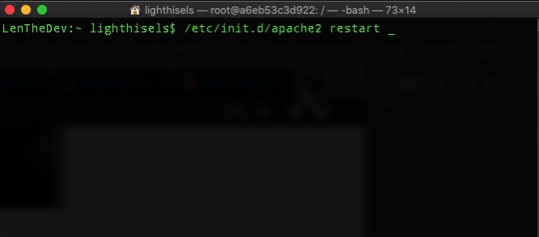

Environment Requirements
- Install Docker on your computer. Docker supports Mac, Linux and Windows.
- Pull an Ubuntu image from Dockerhub Here
- Install vim and apache2 within a docker container than save the container. Log in your Ubuntu in Docker container, then install apache2. Finally, save your modification.
- Share a directory between Docker and host. To read and save data in the host, the shared directory is needed for Docker containers.
- Use vi to create and edit an index.html file in the shared directory After logging into your Ubuntu, using vi to create and edit a simple index.html file, then open it using your host browser
Key Steps and Tutorial Resources
- Install Docker Engine Source 1 Source 2
- Pull an Ubuntu image from Dockerhub Source 3
- How To Commit Changes To A Docker Image With Examples
- Docker Basics: How to Share Data Between a Docker Container and Host Source 4
- 1) -it: log into an interactive shell
- 2) -p: expose an port of Docker container.
- 3) -v: bind a host directory to Docker container. “/Users/lighthisels/Documents” is a directory of the host computer, and “/var/www/htm” is the default location for the entry webpage of a website. Usually we put “index. Html” is this directory
- VI Editor in UNIX Source 4
- How to use Docker to host a website.
Key-step: After the installation, you can run “docker run hello-world” to test your installation. Below is a screenshot when you have ran this command successfully on Mac OS.

Key-step 1: After logging into Docker, you can run “docker pull ubuntu” in your command line window.

Key-step 2: Use “docker images” to check existing Docker images on your computer.

Key-step 1: Run the Ubuntu image to start a Docker container, then log into this Ubuntu container:
Command:
docker run -it ubuntu:latest /bin/bash
 The container ID is located to the right of the current user in linux (i.e Root@ “800bbded462a”)
The container ID is located to the right of the current user in linux (i.e Root@ “800bbded462a”)
Key-step 2: Install applications in this Ubuntu container.
Update system using:
“apt-get update -y”

Install apache2 using:
“apt-get install apache2 -y”

Install vim text editor using:
“apt-get install vim -y"

Key-step 3:Exit Ubuntu container using the command
exit
Key-step 4: Commit container to create a new Docker image
1) Check the container using:
“docker ps -a”
i.e make sure to copy the id of the given ubuntu container
Using command:
“docker run -it -p 127.0.0.1:80:80 -v /Users/lighthisels/Documents:/var/www/html ubuntu-my_apache2 /bin/bash”
Parameter explanation:
Key step 1: check the present working directory using
“pwd”
then go the html directory using:
“cd /var/www/html”
Key step 2: create an “index.html” file using:
“vi index.html”

After finishing your “index.html” file, press the “ESC” key of your computer then type “:wq” to write the file and then quit vi.
Meanwhile, you can find your “index.html” in your bind directory on your computer.
Key step 1: Start apache service using “/etc/init.d/apache2 restart” in your Docker container.
